01 / Reducing scrap through layout planning
Reducing scrap through layout planning
Nesting arranges multiple part profiles on stock plates to make effective use of the available area. This project applies that process to two multi-body baler parts, balancing available plate sizes with the number and thickness of the required pieces.
The study was carried out using NestingWorks, a SolidWorks add-in, and NestFab. The aim was to compare feasible layouts and identify practical material-utilization opportunities.
02 / Two assemblies, three thicknesses
Two assemblies, three thicknesses
The left- and right-side bodies contain 91 parts in total. They are grouped by thickness before nesting so that each layout uses the appropriate stock.

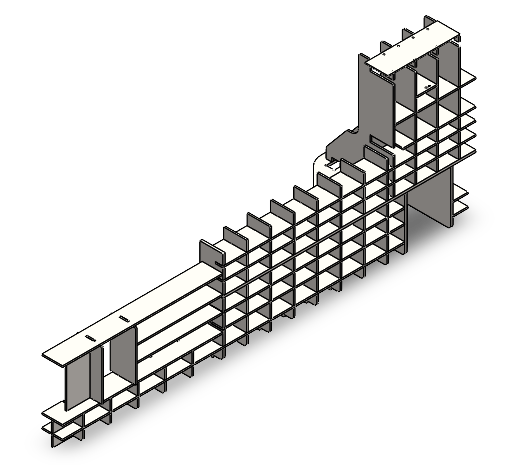
| Thickness | Number of parts |
|---|---|
| 10 mm | 2 |
| 20 mm | 81 |
| 30 mm | 8 |
| Total | 91 |
03 / Selecting the available stock
Selecting the available stock
Market research in the original project established the available standard plate dimensions. Those sizes were then evaluated in both nesting tools, with the results compared for utilization and the shape of the remaining material.
| Thickness | Part count | Plate dimensions (mm) |
|---|---|---|
| 10 mm | 2 | 1800 × 1200 |
| 20 mm | 81 | 6000 × 2400; 3600 × 3000; 3600 × 2400 |
| 30 mm | 8 | 3600 × 2100 |
For the two 10 mm parts, 1800 × 1200 mm was the smallest available plate selected in the study. The more varied 20 mm set required a combination of three plate sizes.
04 / 10 mm: the same utilization
10 mm: the same utilization
Both tools placed the two 10 mm parts on a single 1800 × 1200 mm plate. The reported utilization was the same.
| Tool | Plates | Dimensions (mm) | Parts | Utilization |
|---|---|---|---|---|
| NestingWorks | 1 | 1800 × 1200 | 2 | 25.27% |
| NestFab | 1 | 1800 × 1200 | 2 | 25.27% |

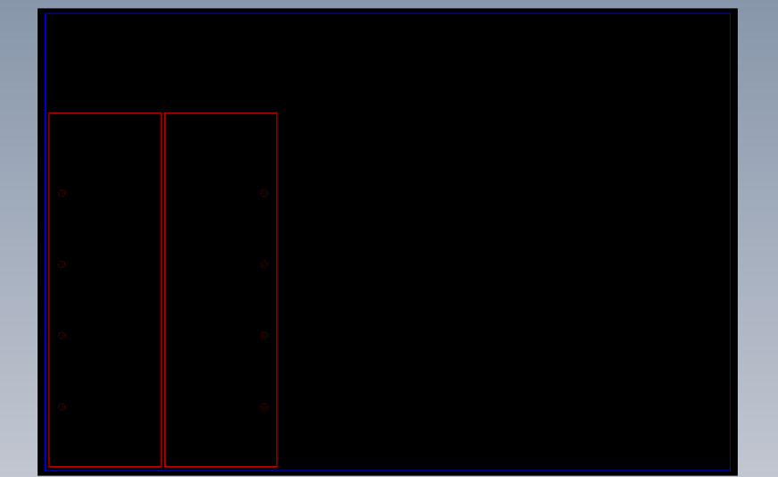

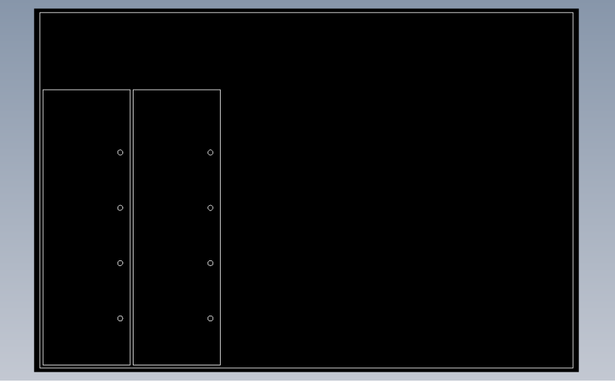
05 / 20 mm: comparing three-plate layouts
20 mm: comparing three-plate layouts
The 81 parts were distributed differently by the two tools. The tables retain each plate’s reported part count and utilization, allowing the layouts to be compared without treating an unweighted average as total utilization.
NestingWorks
| Plates | Dimensions (mm) | Parts | Utilization |
|---|---|---|---|
| 1 | 6000 × 2400 | 28 | 76.488% |
| 1 | 3600 × 3000 | 18 | 81.861% |
| 1 | 3600 × 2400 | 35 | 68.366% |

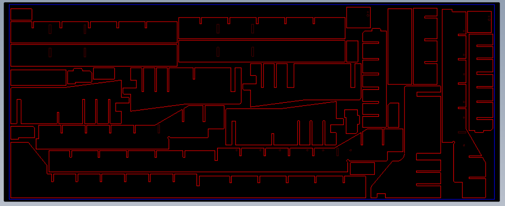

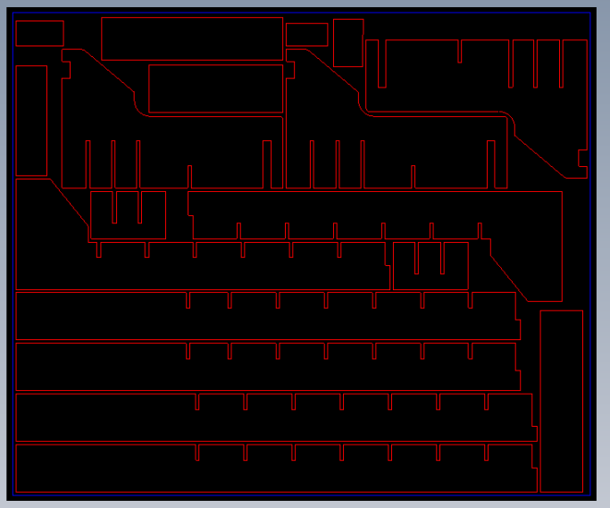

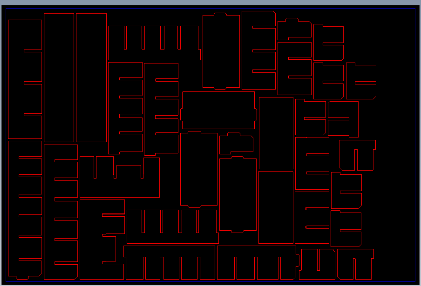
NestFab
| Plates | Dimensions (mm) | Parts | Utilization |
|---|---|---|---|
| 1 | 6000 × 2400 | 26 | 82.27% |
| 1 | 3600 × 3000 | 30 | 63.52% |
| 1 | 3600 × 2400 | 25 | 81.65% |

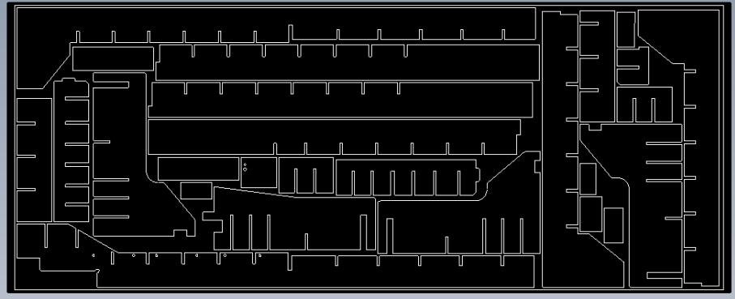

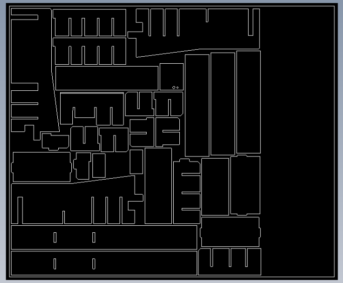

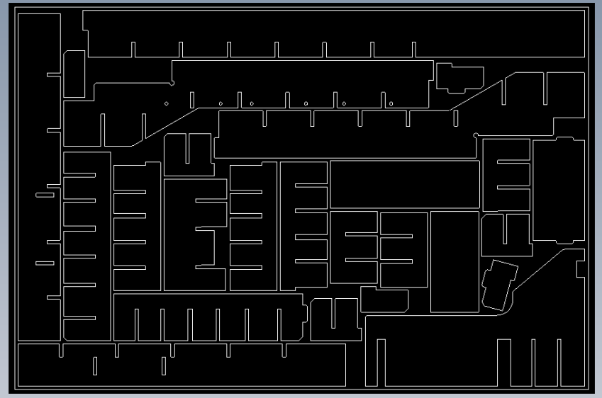
06 / 30 mm: matching reported results
30 mm: matching reported results
Both tools arranged the eight 30 mm parts on one 3600 × 2100 mm plate, with a reported utilization of 65.422%.
| Tool | Plates | Dimensions (mm) | Parts | Utilization |
|---|---|---|---|---|
| NestingWorks | 1 | 3600 × 2100 | 8 | 65.422% |
| NestFab | 1 | 3600 × 2100 | 8 | 65.422% |

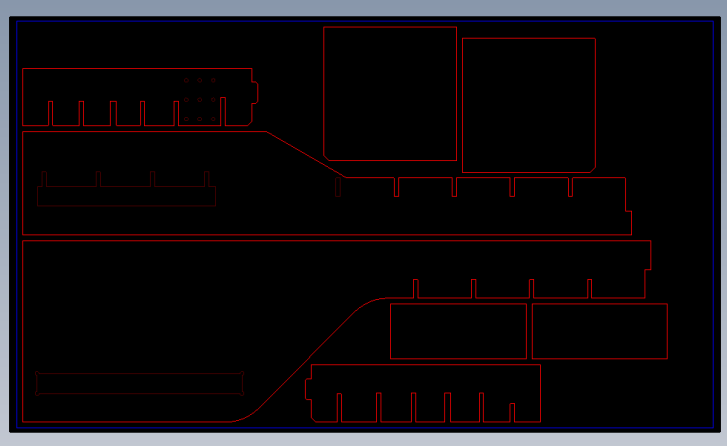

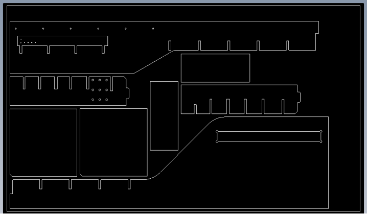
07 / What the layout comparison revealed
What the layout comparison revealed
The tools reported the same utilization for the 10 mm and 30 mm sets. The 20 mm layouts showed the more meaningful differences: part distribution, per-plate utilization and the geometry of the remaining stock.
The original study favored the NestFab 20 mm arrangement, noting slightly better utilization and the rectangular remnant on the second plate. The individual results are retained above so that readers can inspect the basis of that assessment.
The practical lesson is to evaluate a nesting layout as a manufacturing decision: available stock size, thickness, complete part coverage and reusable remnants all matter alongside the reported utilization percentage.